Around 1905, Prokudin-Gorsky envisioned and formulated a plan to use the emerging technological advances that had been made in color photography to document the Russian Empire systematically. Through such an ambitious project, his ultimate goal was to educate the schoolchildren of Russia with his "optical color projections" of the vast and diverse history, culture, and modernization of the empire (Wikipedia)
The Prokudin-Gorskii photo collection is the result of this work. The computer vision algorithm developed in this project aims reconstruct the color photographs by methodically combining the three color channels together.
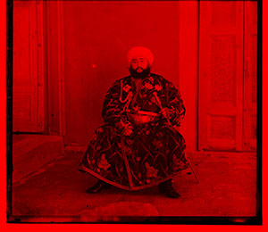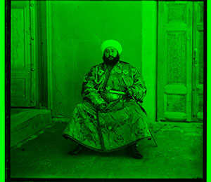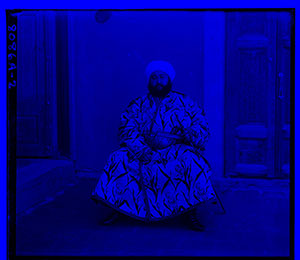
The software is required to find an optimal alignment that maximizes correlation between the red and blue channels, and then the green and blue channels. Finally, the three channels are combined into one image. The development of the algorithm was further improved through the following steps:
A few candidate metrics were evaluated:
Zero Normalized Cross Correlation (ZNCC), calculated by normalizing the intensity differences between the pixel intensities of two images.
Structural Similarity Index Measure (SSIM), an advanced metric that utilizes comparison measurements in luminance, contrast and structure to quantify image quality degradation. Using additional measurements to lock down the error, as opposed to just pixel intensity comparisons help with tricky cases like the image of the emir.
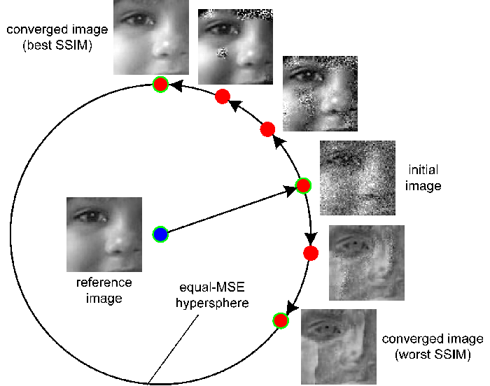
src: cns.nyu.edu
As a baseline metric, SSD was helpful in getting the initial results. Using SSIM produced the highest quality image, but Zero Normalized Cross Correlation proved to be the best tradeoff between quality and speed.
Initially performing an extensive search over the smallest scaled image, subsequent searches in upscaled images search in the upscaled zone between two pixels in the previous scale. This significantly reduces our search space in larger images, and quickly yields higher-quality results.
During the process of matching images, the border contributes little to the final image, yet provides a constant source of distraction. For the matching process, the algorithm removes 20% from each side of the image, and performs the matching on the middle 60% of the image.
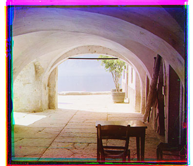
Red: [24, 96] Green [8, 32]
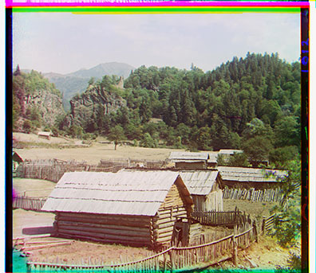
Red: [0, 96] Green [0, 32]
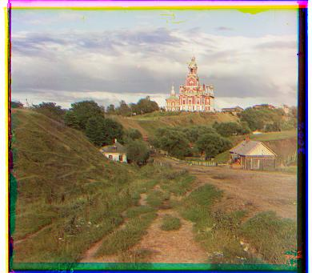
Red: [2, 10] Green [2, 4]
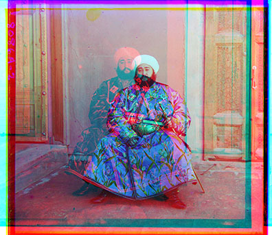
Red: [-200, 0] Green [24, 48] (see below for fixed version)
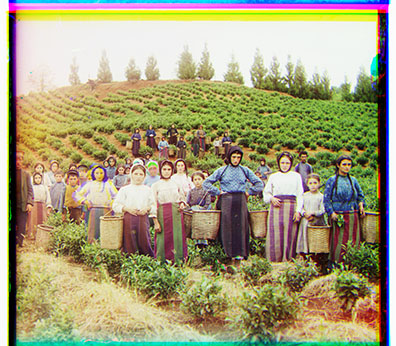
Red: [16, 120] Green [16, 56]
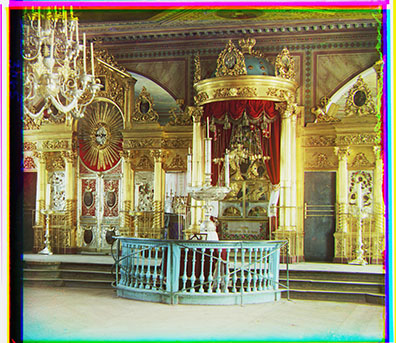
Red: [24, 88] Green [16, 40]
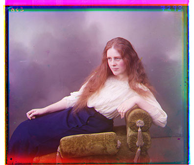
Red: [8, 112] Green [8, 48]
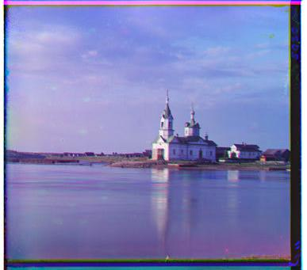
Red: [0, 6] Green [0, 2]
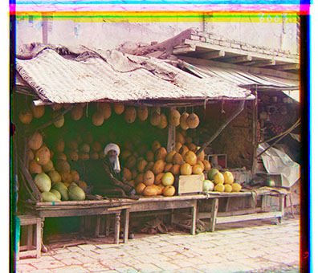
Red: [16, 176] Green [8, 80]
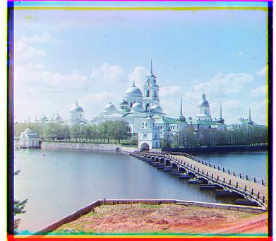
Red: [2, 2] Green [2, -4]
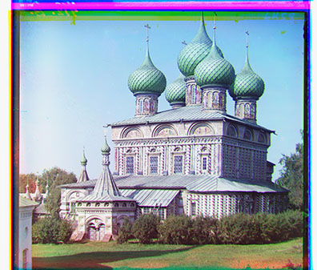
Red: [36, 108] Green [24, 48]
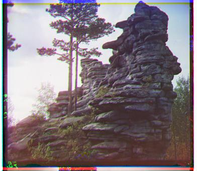
Red: [-2, -2] Green [0, -4]
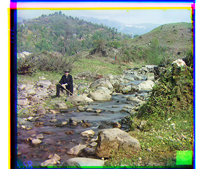
Red: [40, 176] Green [32, 80]
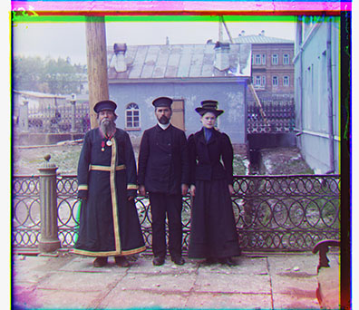
Red: [16, 112] Green [16, 48]
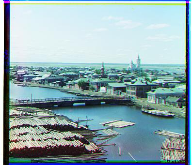
Red: [4, 6] Green [2, 2]
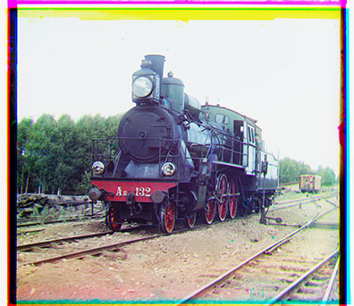
Red: [32, 88] Green [8, 40]
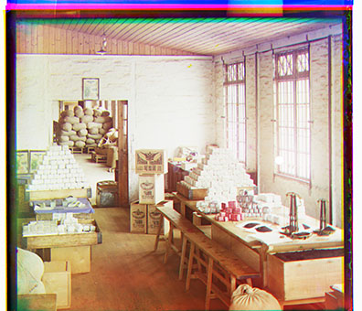
Red: [0,56] Green [-8,104]
The emir image has brightness differences in the green channel which proved tricky to properly align upon the blue channel. Alignment could be fixed by replacing the loss metric implementation with SSIM, or alternatively aligning the other two color layers on the green layer as opposed to the blue layer, with the green color layer's inconsistencies being broadcast across all layers being aligned:
SSIM Result: 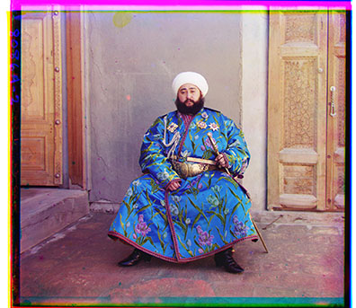
Red: [41, 106] Green [24, 48]
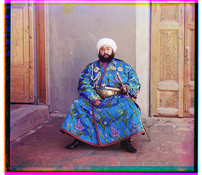
Red: [16, 56] Blue [-24, -48]
Prepared for CS194-26, taught by Prof. Alexei (Alyosha) Efros, last updated 9/09/2020.